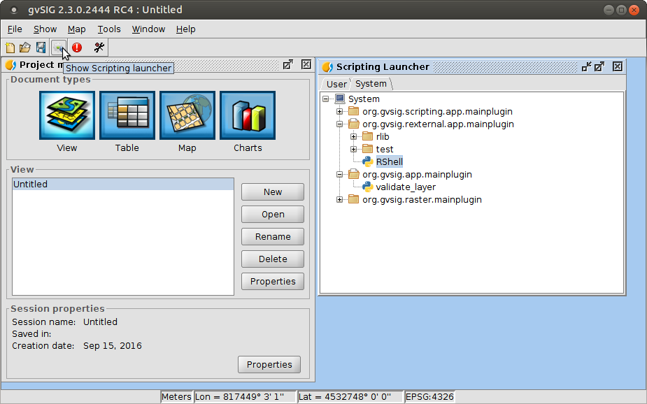
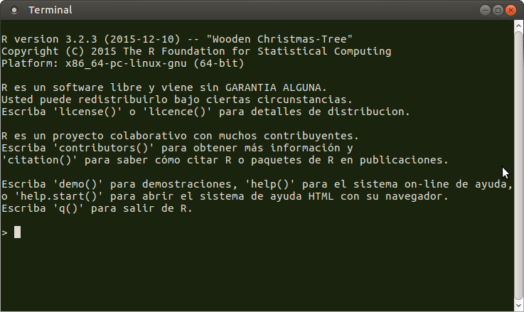

Geostat course, Albacete 2016
Cesar Martinez Izquierdo - www.scolab.es
The following software is required for the course:
Press Down key for details
Download and install from CRAN
Test that RExternal is correctly installed by launching RShell using the gvSIG Scripting launcher
It should open a new R console
Check the next slide if you find any problem
gvSIG/extensiones/org.gvsig.rexternal.app.mainplugin/rpath.properties
within your gvSIG installation folder
# File: gvSIG/extensiones/org.gvsig.rexternal.app.mainplugin/rpath.properties
# keep this empty to search R binary in current PATH
R_BIN_PATH=
## You can manually set the path to the R binary. Examples:
#
# Typical path for Linux:
# R_BIN_PATH=/usr/bin/R
# Typical path for Windows 64 bits:
# R_BIN_PATH=c:\\Program Files\\R\\R-3.2.3\\bin\\x64\\R.exe
# Typical path for Windows 32 bits:
# R_BIN_PATH=c:\\Program Files\\R\\R-3.2.3\\bin\\x32\\R.exe
## Note that in Windows, the path to R will likely change when
## you update R to a newer version!!!!!
## You can also use an internally-installed R instance
# R_BIN_PATH=R/bin/R
Install the following R packages: rgdal, sp and raster.
Type in R console:
install.packages("sp")
install.packages("raster")
install.packages("rgdal")
The rest of the course documentation will be available later in this same URL